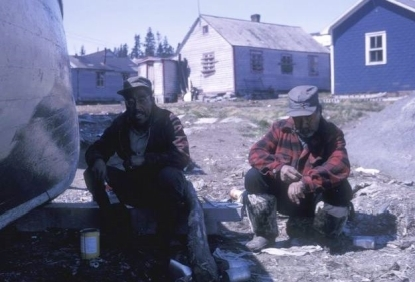
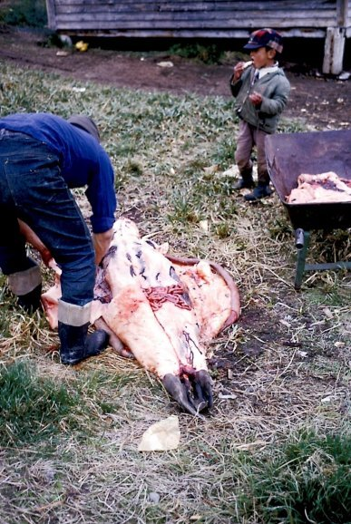

| Boating, Fishing and Hunting in Newfoundland and Labrador, Canada 1965 -- 66 Photo Albums | |
| Llewelyn | |
| UNKNOWN (2013) | |
ボート、釣り、ニューファンドラン
ド·
ラブラドール州、カナダ
の
196
5
年の狩猟 - 6
6
。 66
-
ボート、釣り、ニューファンドラン
ド·
ラブラドール州、カナダ
の
196
5年[
アザラシ猟のグラフィック画像を含
む]
狩猟に関するオリジナルのキャプション付き
の
4
9
の歴史的な写真のユニークなコレクション。住んでいて、 196
5
か
ら
6
6
地域社会の学校で働いていた英国からジョ
ン·
ペニ
ー
1
8
歳のボランティア活動、海外の先生が撮影した。写真は時代の、文化、教育、自然史に重要な貢献をし、美しく時にナインとその周辺の生活の豊かなタペストリーを示している。各アルバムは、人生のコミュニティの道のさまざまな側面に焦点を当てています。
[
ジャケット写真：ホウォーフに網を繕って、写真の礼儀ジョ
ン·
ペニ
ー]
ご注意：一部の読者は、妨害の写真のいくつかを見つけることができます。
[
日本
版
]
1
2 
3

4
5
6
7
8
9
10
11
12
13
14
15

16
17
18
19
20
21
22
23
24
25
26 
27
28
29
30
31
32
33

34
35
36

37
38
39
40
41
42
43
44

45
47
48
49
キャプション：
1
ホウォーフで網を繕っ
ボート
2氏
Lid
d
ボートの絵は、ピーターモーセは上に見える
3
ボート
-
春に、 DNL
A
の背後にある
4
ボートビル
-
ジョン＆ウィルフレッ
ド·
フォード
5
ボ
ブ
Voise
y
のボート
-
起動する準備ができて、
6月
66
ホウォーフに縛
ら6
ボート、
6月
66
釣り
ナイン
春
196
6
に近
い
RCM
P
ボートマス
で7
ジョ
ン·
ペニー
8
ジギング：最初の氷に穴をカット
北のポイントオ
フ
COD
9
ジギング
1
0
私の最初の塩水マスは氷の穴から捉えました。
シシャモ
と
11 Lapp
a
グリーン、
北·
ポイント
ブレークアップ時
に
1
2
ジ
ム·
アンデルセン釣り
ヘンリー＆ビ
ル·
ウェッブ、参り、バー
ト
Voise
yで
1
3
釣り
ヘンリー＆ビ
ル·
ウェッブ、参り、バー
ト
Voisey1
4
釣り
1
5
タラの魚
-
ブラウン夫人の家
に
Pips
i
乾燥
1
6
メンディングタラトラップ、ト
ム·
バーバー＆クルー
ジョー
ジ·
ディッカー
と
17 Codding
-
アモ
ス·
フォックス
Tikkoataku
k
ベイ、 RCM
P
とジェロー
ム
1
8
釣り
1
9
ジョー
ジ·
ディッカーは私たち
に
coddin
g
を取った
メール大尉モルガ
ン
M
V
ボナを集め
る
2
0
スモーキー漁師
狩猟
2
1
とアルバー
ト·
フォード、ブラック島近くの氷
ボート、ジェロー
ム
2
2
シール
ボート
で
2
3
シール
2
4
前に検索使用望遠鏡、ジョ
ン·
フォード、ブラック島
2
5
ニアブラックアイランド
-
ジェロー
ム·
アルバー
ト·
フォード
26 JOAS Igliot
e
はシールをスキニング
2
7
ジェローム、デビッ
ド·
ハリス＆展望台にアルバー
ト·
フォード
2
8
ジェロー
ム·
デイヴィッ
ド·
ハリスは、ボード上の若いフリッパーを運ぶ
29
1
の内側
ホウォーフ
上
3
0
デッドシール
ホウォーフ
上
3
1
デッドシール
3
2
デビッ
ド·
ハリスはティラーで撮影＆アルバー
ト·
フォード
シールの完全
な
3
3
ボート
沈
没1
シール
の
3
4
血
ザッ
ク
Magg
oの
3
5
ホッキョクグマの頭蓋骨、私のナイフ
ザッ
ク
Magg
o
の家を乾
燥
3
6
ホッキョクグマの皮
ショー
の
3
7
ジェリ
ー·
シレットのセイウチ
3
8
ジェリ
ー·
シレットのセイウチ
村の最後
に
3
9
ミート乾燥ハウス
ブラック島に向かう途中でウィルフレッ
ド·
フォードが撮影し
た
4
0
グース
犬
と
4
1
ト
ム·
グスタ
フ·
バーバー
4
2
スリーピングハスキ
ー
1
0月
65
4
3
へ行くか半マイルでそりにナインに戻る
ドーマン＆ジェロームで狩り、 Kau
k
ブルック休
止
4
4
ハスキー
ノーマ
ン·
アンデルセンの家
で
4
5
ハスキー
マーティ
ン·
ホールの近く
に
4
6
ハスキー犬
4
7
ハスキー
4
8
犬の食事、ウェッ
ブ·
ベイ
DNLA 4
9
犬